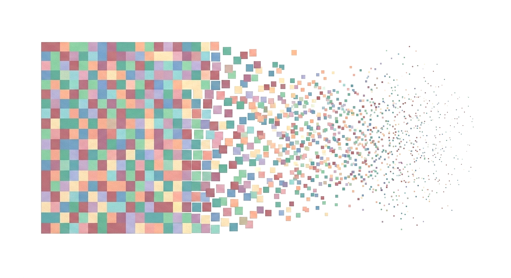
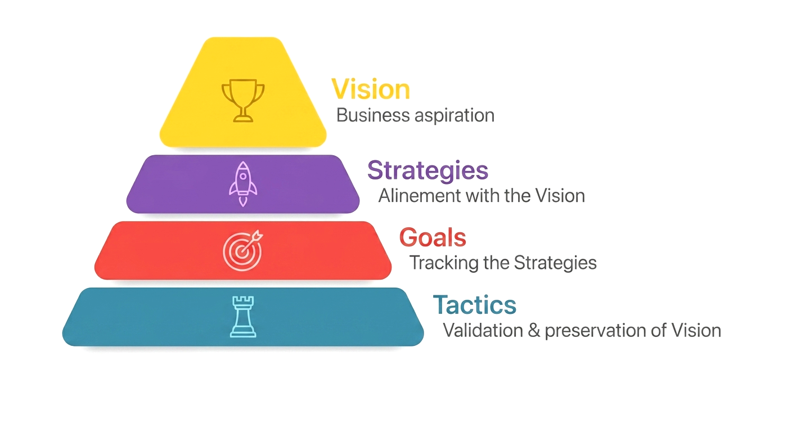
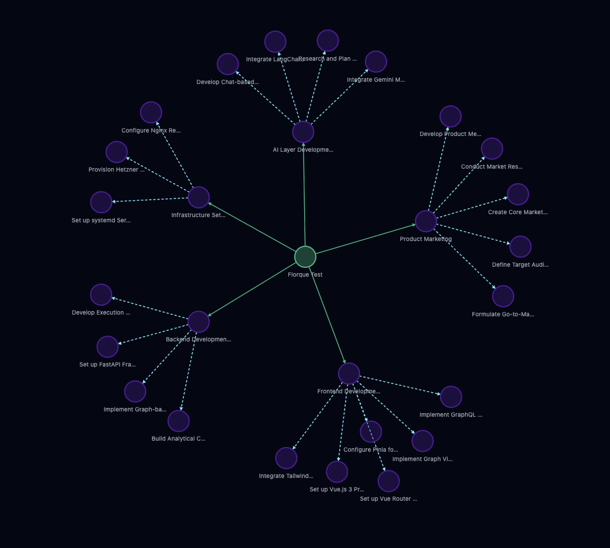
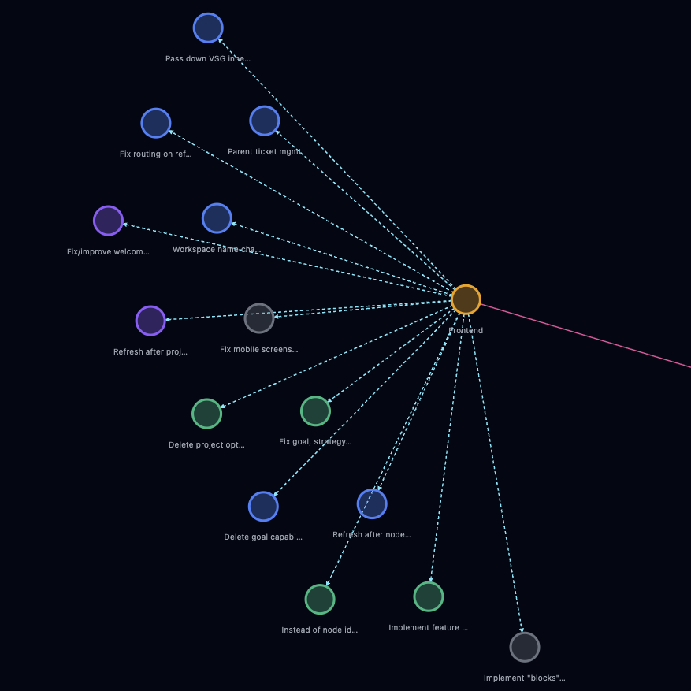
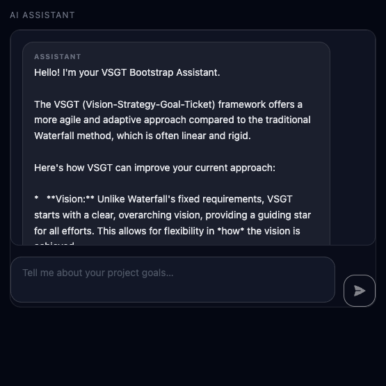

Stop watching your best ideas dissolve.
Florque is the bridge between your "big vision" and the daily grind. Florque helps solo founders stop overthinking, reduce project management overhead, and focus on building.
 Try Beta
Try Beta
Does your vision get lost in the noise?
Building alone is hard. The gap between your inspiration and the reality of a blank task list is where most great ideas go to die.
The Disconnected Tickets
In a flat list, a ticket has no parent — no Goal, no Strategy, no reason. After two weeks of heads-down work, the context is gone. You finish the task exactly as written, but the original problem it was meant to solve has already shifted. That's implementation drift: perfect execution in the wrong direction.

Florque is built differently
Every piece of work lives inside a structure that preserves its reason for existing — so when you pick up a task two weeks later, you don't just see what to do. You see why it matters, what goal it serves, and whether that goal still makes sense. The context doesn't live in someone's head or a Slack thread from last month. It's in the graph, attached to the work, always there.
Every project in Florque is structured around VSGT — Vision, Strategy, Goals, Tasks. Each task executes a Goal. Each Goal measures a Strategy. Each Strategy pursues your Vision. When something shifts at any level, the impact on everything below it is immediately visible.
Keep the project context alive
The VSGT Framework — Vision, Strategy, Goals, Tasks — isn't another complex system to learn. It's a natural descent from the abstract to the concrete, healing the ticket-vs-reality gap once and for all.

Your Project Management Copilot
You start the project from your vision, strategies and goals, Florque helps you to generate and breakdown tasks, suggests improvements and warns about potential operational issues.
Imagine a co-founder who never gets tired and only cares about your success. Someone who always remembers the "why" and always sober. Someone to break down the "Scary monsters" into "Doable Tiny Tasks"
Idea Refiner
Tell the AI your messy dream. It asks the right questions to turn it into a concrete strategy.

Task Shredder
Turn "Build MVP" into 12 actionable 20-minute steps with one click.

Gentle Nudges
Not annoying notifications—just supportive checks to keep your momentum high.
